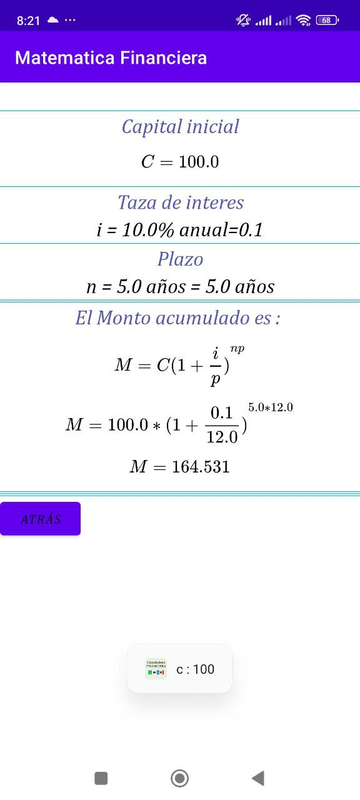
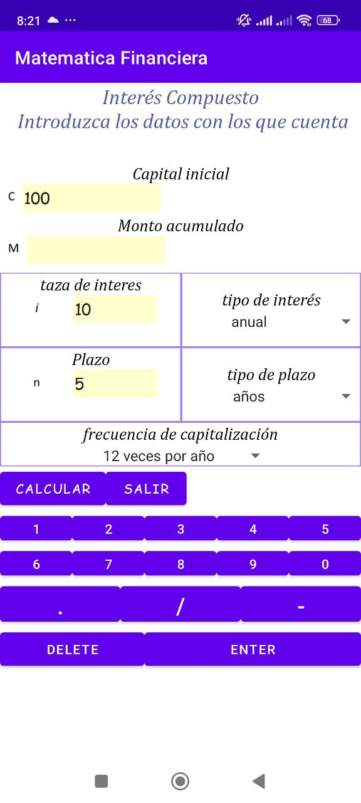
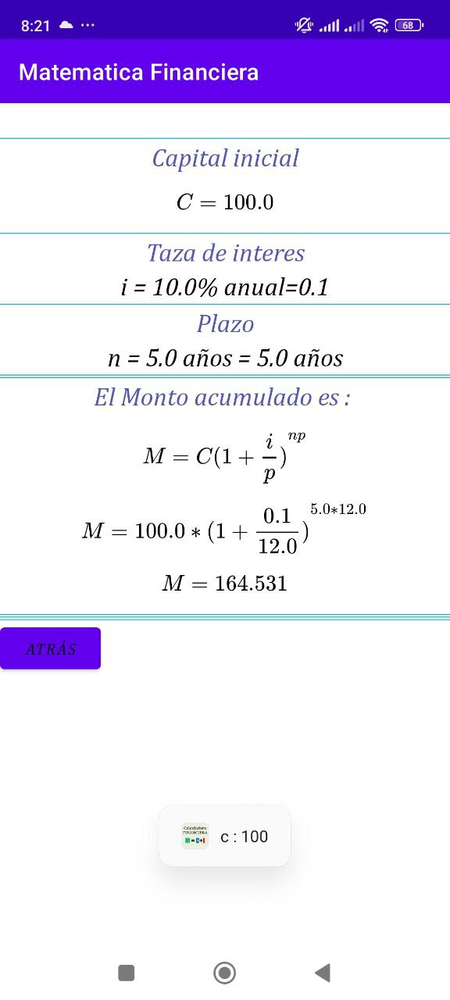
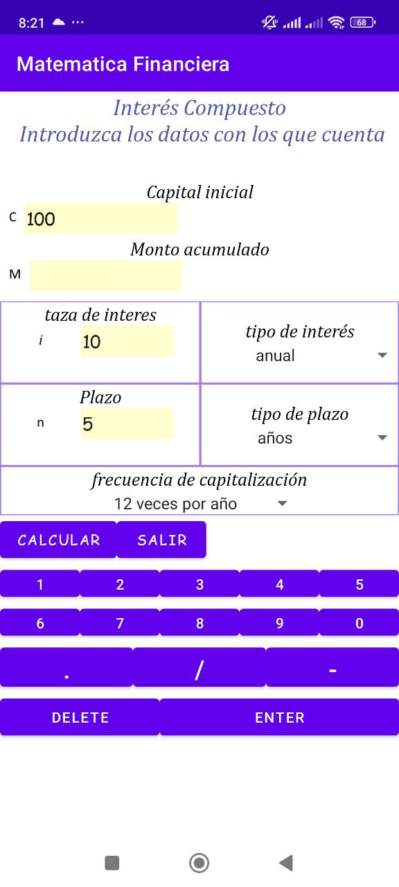

Dr. Victor Manuel Martínez Chamorro
Email: vmmartinez@pol.una.py | Phone: +595971545030
Google Scholar: Profile
Portfolio / Selected Projects
- Free white board: https://free-board.onrender.com
- Android Apps Repo: https://github.com/Chamiltoniano/Android-Apps
All Kinematics
Android application in Java. Calculator for various kinematic phenomena of point objects, including uniform motion, accelerated motion, and projectile motion. For each case, position vs. time graphs are generated.


Matematica Financiera
Android application in Java. Calculator for practical cases in financial mathematics, including simple interest, compound interest, annuities, and amortization tables using the French and German systems.

 





Academic Degrees
PhD in Computer Science – National University of Asunción
Master in Computer Science – National University of Asunción
Bachelor in Physical Sciences – National University of Asunción
Bibliographic Production
See full list in Google Scholar
Teaching Activities
Institutions: FPUNA, FaCEN, Columbia University, Uninter (2012–2024)
Thesis Supervision
Advisor of 4 students (2024–present)
Awards
Special Mention – National Science Award (2020)
Conferences
Poster/Oral presenter in Switzerland, Argentina, Paraguay (2018–2024)